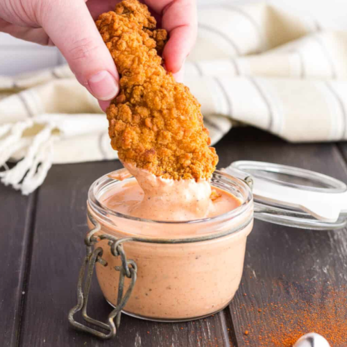

Copycat Cane's Sauce

Description
A savory mayonnaise-based sauce that goes will with chicken made in the style of Raising Cane's signature sauce.
Prep Time: 5
Cook Time: 5
Additional Time: 10
Total Time: 20 mins
Ingredients:
- ½ Cup Mayo
- ¼ Cup Ketchup
- ½ tsp Garlic salt
- 1 tsp worcestershire sauce
- ½ tsp Black pepper
- ½ tsp MSG
- ½ tsp Paprika
Directions:
- Combine all ingredients in a mixing bowl and stir with a wooden spoon until fully incorporated.
- Dip chicken stips and enjoy!